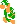
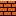
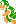

Super Mario Bros., World 5-2. No single piece here is hard. Put together, the enemies and the obstacles ask one question: when do I go, and which way?

Hammer Bros ×2 fill the air over the ground
Bricks lift the threat and open a second route
They throw in arcs toward Mario, so the ground under them is never safe for long, and they hop between rows, so the high route isn’t free either. Wait too long and they walk toward you. They set the clock.
The pipe is the step up to the bricks, and the plant decides when you can take it. It can’t rise while you stand on the pipe, so the pipe is also the one safe perch from which to read the hammers.
They lift the Hammer Bros so their hammers cover the whole lane, put a ceiling over your jumps, and give you a second route and a weapon: bump the brick under a Hammer Bro to knock it out.
The exit is a high jump from one spot. You can’t take it while side-stepping, so you have to finish the dodge first or time the jump between throws.
Alone, each piece asks one small thing: wait for the plant, dodge a hammer, make a jump. Together, the plant’s timer and the hammers’ timer run at once, the safe perch is right next to the danger, and the exit punishes a hurried crossing. That overlap is the encounter.
Two more encounters from the same pieces, each asking a different question. Below each: clean runs out of 20 for the lab’s three routes.